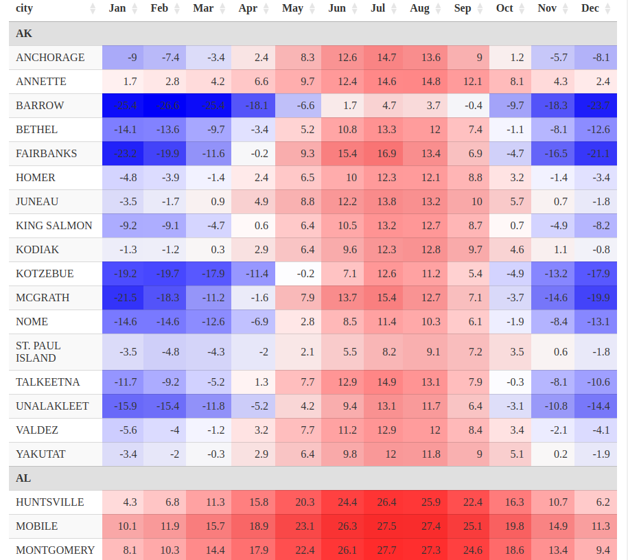

Heatmap formatting of a table with 'DT'
Googling “heatmap format excel” returns a lot of results. Here we will see how to do a heatmap formatting with a DT table in R.
The dataset we use provides the average monthly temperatures over a year for some cities in USA. It is available in a CSV file here.
The table is in long format. Below we turn it into a table in wide format. We also convert the temperatures to Celsius degrees and we rename the months which are given as numbers in the original data.
# read the CSV data
dat0 <- read.csv("TempCitiesUSA.csv")
# it is in long format:
head(dat0)
## state city month temp.f
## 1 AK ANCHORAGE 1 15.8
## 2 AK ANCHORAGE 2 18.7
## 3 AK ANCHORAGE 3 25.9
## 4 AK ANCHORAGE 4 36.3
## 5 AK ANCHORAGE 5 46.9
## 6 AK ANCHORAGE 6 54.7
# I prefer Celsius degrees
dat0[["temp.f"]] <- round((dat0[["temp.f"]] - 32) / 1.8, digits = 1L)
# convert to wide format
library(tidyr)
dat <- dat0 %>%
pivot_wider(
names_from = month,
values_from = temp.f
)
# replace the month numbers in the column names
colnames(dat)[3:14] <- month.abb
# have a look
pillar::glimpse(dat, width = 65)
## Rows: 261
## Columns: 14
## $ state <chr> "AK", "AK", "AK", "AK", "AK", "AK", "AK", "AK", "…
## $ city <chr> "ANCHORAGE", "ANNETTE", "BARROW", "BETHEL", "FAIR…
## $ Jan <dbl> -9.0, 1.7, -25.4, -14.1, -23.2, -4.8, -3.5, -9.2,…
## $ Feb <dbl> -7.4, 2.8, -26.6, -13.6, -19.9, -3.9, -1.7, -9.1,…
## $ Mar <dbl> -3.4, 4.2, -25.4, -9.7, -11.6, -1.4, 0.9, -4.7, 0…
## $ Apr <dbl> 2.4, 6.6, -18.1, -3.4, -0.2, 2.4, 4.9, 0.6, 2.9, …
## $ May <dbl> 8.3, 9.7, -6.6, 5.2, 9.3, 6.5, 8.8, 6.4, 6.4, -0.…
## $ Jun <dbl> 12.6, 12.4, 1.7, 10.8, 15.4, 10.0, 12.2, 10.5, 9.…
## $ Jul <dbl> 14.7, 14.6, 4.7, 13.3, 16.9, 12.3, 13.8, 13.2, 12…
## $ Aug <dbl> 13.6, 14.8, 3.7, 12.0, 13.4, 12.1, 13.2, 12.7, 12…
## $ Sep <dbl> 9.0, 12.1, -0.4, 7.4, 6.9, 8.8, 10.0, 8.7, 9.7, 5…
## $ Oct <dbl> 1.2, 8.1, -9.7, -1.1, -4.7, 3.2, 5.7, 0.7, 4.6, -…
## $ Nov <dbl> -5.7, 4.3, -18.3, -8.1, -16.5, -1.4, 0.7, -4.9, 1…
## $ Dec <dbl> -8.1, 2.4, -23.7, -12.6, -21.1, -3.4, -1.8, -8.2,…We will use the lowest temperature and the highest temperature later.
# get the lowest and highest temperatures
lowest <- min(dat0[["temp.f"]])
highest <- max(dat0[["temp.f"]])Now let’s detail our manipulation for one column. We map the temperatures to the interval \((0,1)\), in such a way that \(0\) is sent to \(0.5\).
# let's detail for one column, January
x <- dat[["Jan"]]
# function to map from (lowest, highest) to (0, 1), mapping 0 to 0.5
interpfun <- splinefun(
c(lowest, 0, highest),
c(0, 0.5, 1)
)
# map the January data
y <- interpfun(x)Now we map each value of y to a color, such that \(0.5\) is sent to white.
# function mapping (0, 1) to a color; 0.5 is sent to white
colfunc <- colorRamp(c("blue", "white", "red"))
# get the colors for January
cols <- colfunc(y)
# these are rgb codes, we convert them to hex codes
clrs <- rgb(cols[, 1L], cols[, 2L], cols[, 3L], maxColorValue = 255)In this way the negative temperatures will be colored in blue and the positive temperatures in red.
Now we apply this manipulation for each month.
# now we perform this stuff for each month
Colors <- lapply(dat[, month.abb], function(x) {
y <- interpfun(x)
cols <- colfunc(y)
rgb(cols[, 1L], cols[, 2L], cols[, 3L], maxColorValue = 255)
})
# have a look
str(Colors)
## List of 12
## $ Jan: chr [1:261] "#AEAEFF" "#FFF0F0" "#0C0CFF" "#7E7EFF" ...
## $ Feb: chr [1:261] "#BDBDFF" "#FFE7E7" "#0000FF" "#8282FF" ...
## $ Mar: chr [1:261] "#E1E1FF" "#FFDBDB" "#0C0CFF" "#A7A7FF" ...
## $ Apr: chr [1:261] "#FFEAEA" "#FFC7C7" "#5757FF" "#E1E1FF" ...
## $ May: chr [1:261] "#FFB9B9" "#FFAEAE" "#C4C4FF" "#FFD3D3" ...
## $ Jun: chr [1:261] "#FF9797" "#FF9999" "#FFF0F0" "#FFA5A5" ...
## $ Jul: chr [1:261] "#FF8787" "#FF8888" "#FFD7D7" "#FF9292" ...
## $ Aug: chr [1:261] "#FF9090" "#FF8787" "#FFDFDF" "#FF9C9C" ...
## $ Sep: chr [1:261] "#FFB4B4" "#FF9B9B" "#FBFBFF" "#FFC1C1" ...
## $ Oct: chr [1:261] "#FFF4F4" "#FFBBBB" "#A7A7FF" "#F5F5FF" ...
## $ Nov: chr [1:261] "#CCCCFF" "#FFDADA" "#5555FF" "#B6B6FF" ...
## $ Dec: chr [1:261] "#B6B6FF" "#FFEAEA" "#1E1EFF" "#8C8CFF" ...Now let’s do the DT table. I use the RowGroup extension to group the data by state (the 0-th column in JavaScript).
library(DT)
dtable <- datatable(
dat, rownames = FALSE, extensions = "RowGroup",
options = list(
rowGroup = list(dataSrc = list(0)),
columnDefs = list( # hide the grouping column
list(targets = 0, visible = FALSE)
)
)
)And now we format this table.
for(month in month.abb) {
dtable <- dtable %>%
formatStyle(
month,
backgroundColor = styleEqual(dat[[month]], Colors[[month]])
)
}That’s done.
dtable